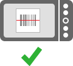
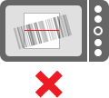

Actein Scanner continuously scans a square region shown on the screen - just line up the the qr code so it is completely inside the viewfinder rectangle:

When a qr code is read, a beep sound will play and you'll see the results of the scan and description of what the qr code contains.
If you're having trouble scanning, make sure to hold the qr code steady. If the camera is unable to focus, try moving the qr code further or closer from the device.